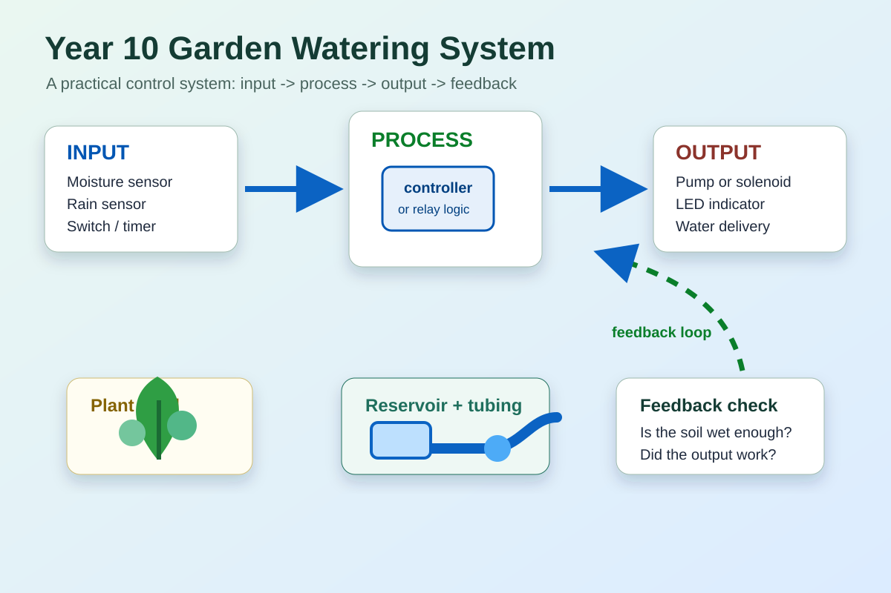
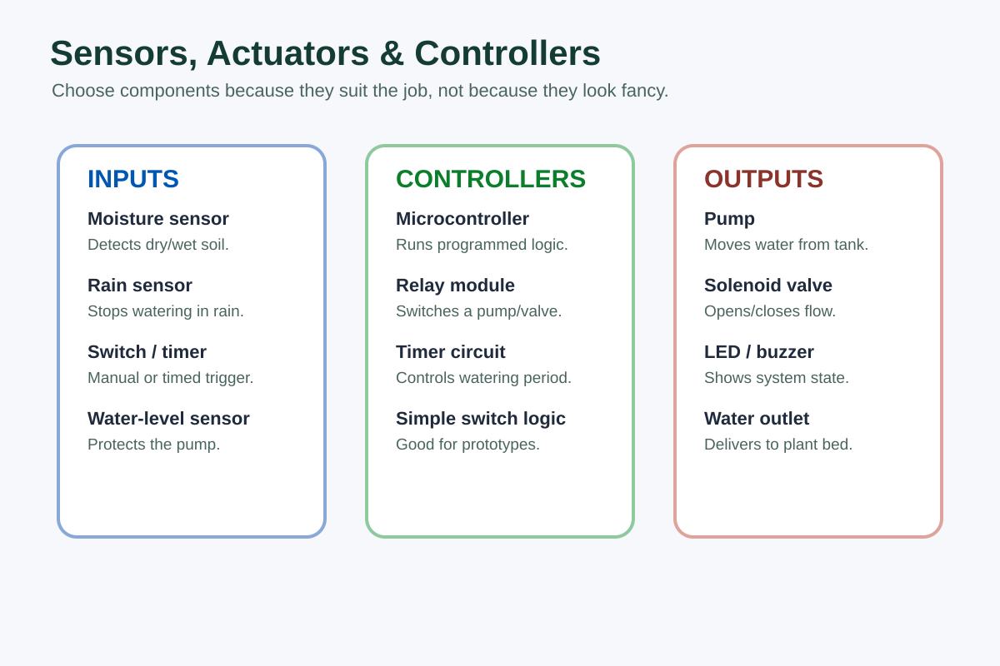
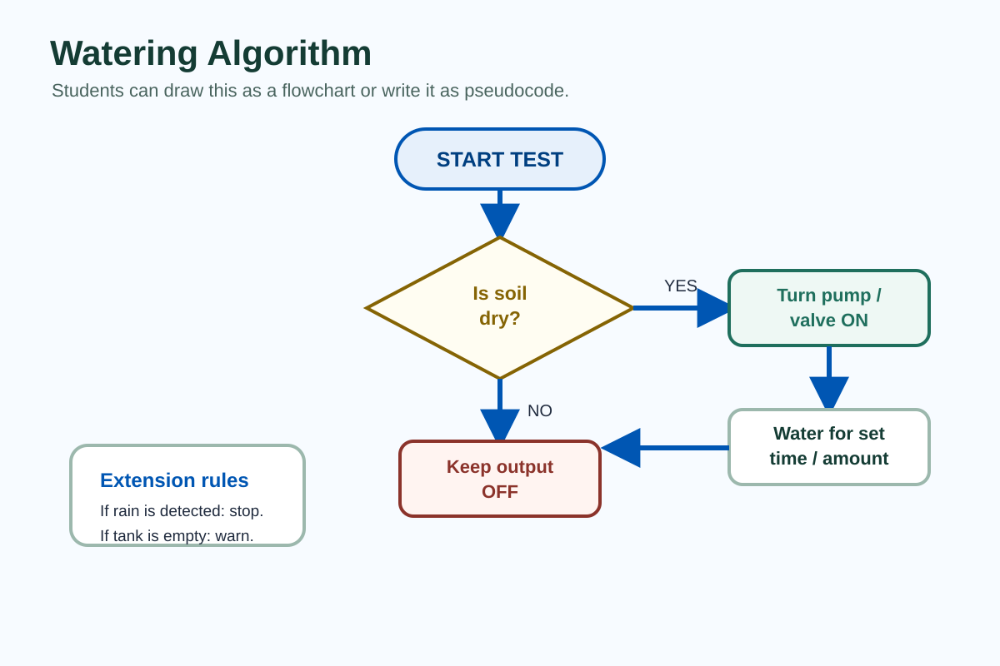

Key Notes
Why this matters: A control system is only useful if it responds correctly. In this project, the aim is not just to make water move. The aim is to design a system that makes sensible decisions, uses water responsibly and can be explained clearly in your folio.
1. What is a Control System?

A control system uses information to make something happen. It normally has four parts:
- Input: information entering the system, such as a soil moisture reading, switch, timer or rain sensor.
- Process: the decision-making part, such as a microcontroller, timer circuit, relay logic or programmed rule.
- Output: the action produced, such as a pump, solenoid valve, LED, buzzer or water flow.
- Feedback: information sent back into the system so it can adjust its response.
In the Garden Watering System, the control problem is simple to state but still needs careful thinking: when should the system water, when should it stop, and how will it avoid wasting water or damaging parts?
2. Manual, Semi-automatic and Automatic Control
Not all control systems are equally automatic. The level of control affects reliability, cost, complexity and the evidence you can show in your design work.
| Control Type |
How It Works |
Garden Watering Example |
| Manual |
A person controls the output directly. |
Student presses a switch to turn a pump on and off. |
| Semi-automatic |
A person starts the system, but a timer or simple rule controls part of the action. |
Student presses start; the pump runs for 10 seconds, then stops. |
| Automatic |
The system uses sensor information to decide what to do. |
Soil moisture sensor detects dry soil and the controller runs the pump until the reading reaches a set threshold. |
A fully automatic system sounds impressive, but it is not automatically better. A good engineering choice balances function, safety, reliability, cost and classroom build time.
3. Inputs: Sensors and Signals

An input is how the system receives information. Inputs can be digital, meaning they are basically on/off, or analogue, meaning they vary across a range.
- Switch: manual input used to start, stop or reset a system.
- Soil moisture sensor: detects whether soil is dry or wet enough.
- Rain sensor: prevents watering when rain is already present.
- Water level sensor: protects the pump by checking there is enough water in the tank.
- Light sensor or timer: can limit watering to a suitable time of day.
The input must suit the decision. For example, a push button is useful for manual control, but it cannot tell whether the soil actually needs water. A moisture sensor gives better evidence for automatic control, but it needs calibration and testing.
4. Process: Decisions, Thresholds and Logic

The process is the rule or controller that decides what happens next. It could be a microcontroller program, a timer circuit, a relay setup or a simple teacher-provided control board.
A threshold is the point where a reading is high or low enough to trigger action. For example, if soil moisture drops below the dry threshold, the system may start watering.
Basic control rule: If the soil is dry and there is water in the tank and rain is not detected, turn the pump on. If the soil is wet, the tank is low or rain is detected, keep the pump off.
Strong algorithms include stop conditions. The dodgy version is: turn the pump on. The better version explains when to start, when to stop, and what should happen if a sensor gives a risky reading.
5. Outputs: Actuators and Indicators
An output is the action produced by the system. The main output in this project is water delivery, but extra outputs can make the system easier to test and explain.
- Pump: moves water from a tank or reservoir to the garden bed.
- Solenoid valve: opens or closes water flow when controlled electrically.
- LED indicator: shows system state, such as dry soil, watering, tank low or fault.
- Buzzer: can warn that the tank is low or the system has stopped for safety.
Actuators often need more current than a controller pin can safely provide. This is where a relay, transistor or motor driver may be used to switch the output safely.
6. Feedback and Reliability
Feedback lets the system check whether the action is working. Without feedback, a system may keep watering even when the soil is already wet, or keep running a pump when the water supply has run out.
- Open-loop control: the system acts without checking the result. Example: run the pump for 10 seconds every time the button is pressed.
- Closed-loop control: the system uses feedback to adjust or stop the action. Example: run the pump until soil moisture reaches the wet threshold.
Feedback improves reliability, but it also adds parts that can fail. Good testing checks whether sensors are positioned correctly, readings are stable and the system behaves sensibly in dry, wet, rainy and low-water conditions.